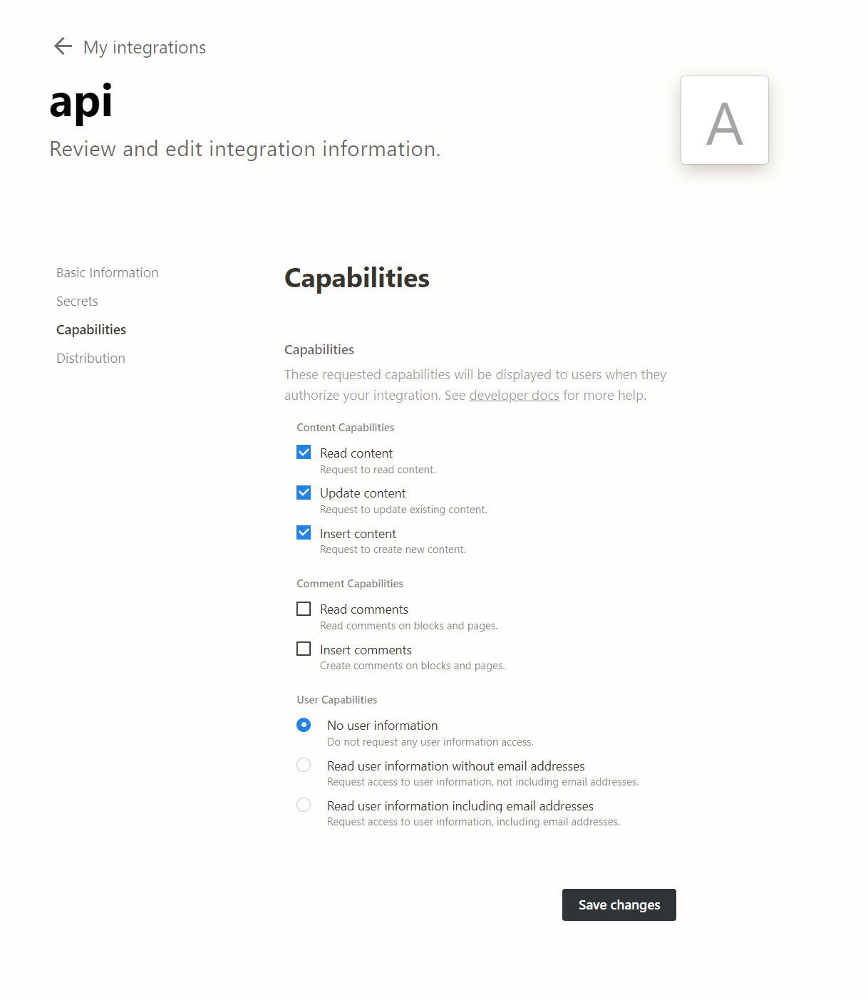
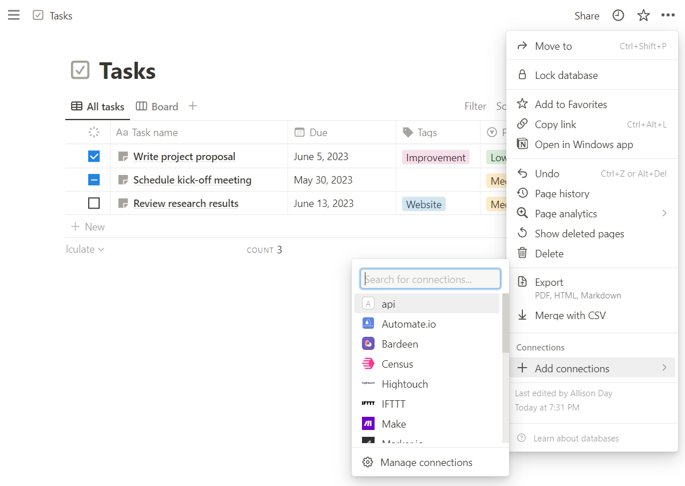
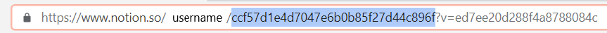

Notion API: Querying and Updating Databases with Python
What is Notion?
“Notion is a single space where you can think, write, and plan. Capture thoughts, manage projects, or even run an entire company — and do it exactly the way you want.” 1 I have personally been using Notion for the past 3 years. I used notion to keep track of my work hours, my to-do list, and all of my classes in the back half of college.
You keep track of everything through databases of pages, and you can join databases together and create different views to really unlock Notion’s full potential.
Why use the Notion API?
I use notion to store all of my recipies, and I’m constantly updating my recipe database. But putting in all 10 properties for every new entry is my least favorite part. So I wanted to create a web scrapper that would take the recipe link, scrape all the info, and automatically upload it to Notion.
Luckily, Notion has an API that lets you query databases, create new pages and update existing pages. Unluckily, all of the examples are written in JavaScript and Shell, and all of the python packages I could find were unintuitive. So here is a very basic tutorial from my adventure using the Notion API.
Notion Integrations & Secret Tokenpi

Go to notion.so/my-integrations and click ‘New Integration’. Give it a name and ‘Submit’.
Open the integration that you just created and go to ‘Capabilities’. Make sure the following are selected:
- Read content
- Update content
- Insert content
Click “Save Changes”
Go to the ‘Secrets’ menu and find the ‘Internal Integration Token’. Copy the token and save it somewhere safe. You will need it later.
Here is an article about hiding API keys 🔗link
Set Up
Find the database that you want to connect to the API. Go to connections and select your integration. If your database has relations, do the same with them.

Also get the DATABASE_ID from the URL

Headers
To make any requests you need to include a header with your API request. It is the same for both Querying Databases and Updating Pages.
import requests
import json
SECRET = secret
DATABASE_ID = database_id
headers = {
"Authorization": "Bearer " + SECRET,
"Content-Type": "application/json",
"Notion-Version": "2022-06-28",
}Querying Databases (docs)
This is largely based off of this python tutoria
To get all of the pages and their properties in a notion database:
def get_database():
base_url = f"https://api.notion.com/v1/databases/{DATABASE_ID}/query"
page_size = 100
payload = {
"page_size": page_size,
}
response = requests.post(base_url, json=payload, headers=headers)
data = response.json()
results = data["results"]
while data["has_more"]:
payload = {"page_size": page_size, "start_cursor": data["next_cursor"]}
response = requests.post(base_url, json=payload, headers=headers)
data = response.json()
results.extend(data["results"])
return results- 1
-
if query is broken, it will break here because there will be no
results - 2
-
Returns a
JSONof all pages in database
[
{
"object": "page",
"id": "0a62cb98-cbf6-4872-af15-69237a9f0597",
"created_time": "2023-05-30T01:26:00.000Z",
"last_edited_time": "2023-05-30T01:26:00.000Z",
"created_by": {"object": "user", "id": "a003388e-8378-4453-ac9e-dc09bb7ac1b3"},
"last_edited_by": {
"object": "user",
"id": "a003388e-8378-4453-ac9e-dc09bb7ac1b3",
},
"cover": None,
"icon": {
"type": "external",
"external": {"url": "https://www.notion.so/icons/clipping_lightgray.svg"},
},
"parent": {
"type": "database_id",
"database_id": "ccf57d1e-4d70-47e6-b0b8-5f27d44c896f",
},
"archived": False,
"properties": {
"Task name": {
"id": "title",
"type": "title",
"title": [
{
"type": "text",
"text": {"content": "Write project proposal", "link": None},
"annotations": {
"bold": False,
"italic": False,
"strikethrough": False,
"underline": False,
"code": False,
"color": "default",
},
"plain_text": "Write project proposal",
"href": None,
}
],
},
"Tags": {
"id": "notion%3A%2F%2Ftasks%2Ftags_property",
"type": "multi_select",
"multi_select": [
{"id": "Improvement", "name": "Improvement", "color": "pink"}
],
},
"Status": {
"id": "notion%3A%2F%2Ftasks%2Fstatus_property",
"type": "status",
"status": {"id": "done", "name": "Done", "color": "green"},
},
"Due": {
"id": "notion%3A%2F%2Ftasks%2Fdue_date_property",
"type": "date",
"date": {"start": "2023-06-05", "end": None, "time_zone": None},
},
"Priority": {
"id": "notion%3A%2F%2Ftasks%2Fpriority_property",
"type": "select",
"select": {"id": "priority_low", "name": "Low", "color": "green"},
},
"Summary": {
"id": "notion%3A%2F%2Ftasks%2Fai_summary_property",
"type": "rich_text",
"rich_text": [
{
"type": "text",
"text": {
"content": "This project proposal aims to achieve cross-functional alignment on investing in mobile performance in Q3.",
"link": None,
},
"annotations": {
"bold": False,
"italic": False,
"strikethrough": False,
"underline": False,
"code": False,
"color": "default",
},
"plain_text": "This project proposal aims to achieve cross-functional alignment on investing in mobile performance in Q3.",
"href": None,
}
],
},
},
"url": "https://www.notion.so/Write-project-proposal-0a62cb98cbf64872af1569237a9f0597",
},
{
"object": "page",
"id": "6e9d3caa-d5bf-47d9-88e7-cb6f76708c76",
"created_time": "2023-05-30T01:26:00.000Z",
"last_edited_time": "2023-05-30T01:26:00.000Z",
"created_by": {"object": "user", "id": "a003388e-8378-4453-ac9e-dc09bb7ac1b3"},
"last_edited_by": {
"object": "user",
"id": "a003388e-8378-4453-ac9e-dc09bb7ac1b3",
},
"cover": None,
"icon": {
"type": "external",
"external": {"url": "https://www.notion.so/icons/clipping_lightgray.svg"},
},
"parent": {
"type": "database_id",
"database_id": "ccf57d1e-4d70-47e6-b0b8-5f27d44c896f",
},
"archived": False,
"properties": {
"Task name": {
"id": "title",
"type": "title",
"title": [
{
"type": "text",
"text": {"content": "Schedule kick-off meeting", "link": None},
"annotations": {
"bold": False,
"italic": False,
"strikethrough": False,
"underline": False,
"code": False,
"color": "default",
},
"plain_text": "Schedule kick-off meeting",
"href": None,
}
],
},
"Tags": {
"id": "notion%3A%2F%2Ftasks%2Ftags_property",
"type": "multi_select",
"multi_select": [],
},
"Status": {
"id": "notion%3A%2F%2Ftasks%2Fstatus_property",
"type": "status",
"status": {"id": "in-progress", "name": "In Progress", "color": "blue"},
},
"Due": {
"id": "notion%3A%2F%2Ftasks%2Fdue_date_property",
"type": "date",
"date": {"start": "2023-05-30", "end": None, "time_zone": None},
},
"Priority": {
"id": "notion%3A%2F%2Ftasks%2Fpriority_property",
"type": "select",
"select": {
"id": "priority_medium",
"name": "Medium",
"color": "yellow",
},
},
"Summary": {
"id": "notion%3A%2F%2Ftasks%2Fai_summary_property",
"type": "rich_text",
"rich_text": [
{
"type": "text",
"text": {
"content": 'This task is in progress and involves scheduling a kick-off meeting for the performance project, preparing meeting materials in advance, and inviting all stakeholders to the meeting. ',
"link": None,
},
"annotations": {
"bold": False,
"italic": False,
"strikethrough": False,
"underline": False,
"code": False,
"color": "default",
},
"plain_text": 'This task is in progress and involves scheduling a kick-off meeting for the performance project, preparing meeting materials in advance, and inviting all stakeholders to the meeting.',
"href": None,
}
],
},
},
"url": "https://www.notion.so/Schedule-kick-off-meeting-6e9d3caad5bf47d988e7cb6f76708c76",
},
]Filter & Sorts
You can also include a filter in your payload. These differ from property type to property type, and may take some trial and error. Sorting can also be added to return everything in
payload = {
"page_size": page_size,
"filter": {
"or": [
{"property": "Status", "status": {"does_not_equal": "Done"}},
{"property": "Tags", "multi_select": {"contains": "Improvement"}},
]
},
"sorts": [{"property": "Due", "direction": "ascending"}],
}Updating Pages (docs)
Code is based off of this tutorial
The only way to update entries in a database is one at a time on the page level. You will need the PAGE_ID, which you get when you query the database.
from datetime import datetime, timezone
PAGE_ID = page_id
def patch_page():
page_url = f"https://api.notion.com/v1/pages/{PAGE_ID}"
payload = {
"properties": {
"Status": {"status": {"name": "Done"}},
"Tags": {"multi_select": [{"name": "Improvement"}]},
"Due": {
"date": {
"start": datetime(2023, 5, 29).astimezone(timezone.utc).isoformat(),
"end": None,
}
},
}
}
response = requests.patch(page_url, json=payload, headers=headers)
return response.json()If successful, it will return a JSON of the updated page.
Properties
These can be a bit finicky to get working. These are the types that I’ve got working so far. They go inside the properties: {} dictionary in the payload.
| Type | Code | Note |
|---|---|---|
| checkbox | |
accepts a bool (True/False) |
| date | |
requires from datetime import datetime, timezone |
| multi-select | |
accepts a list of named vals to select. If val doesn’t exist it will be created. |
| number | |
|
| relation | |
requires relation database to have integration and get the related page’s id |
| rich_text | |
|
| select | |
like multiselect, if val doesn’t exist it will be created |
| status | |
like multiselect but value must exist |
Footnotes
https://www.notion.so/help/guides/what-is-notion↩︎